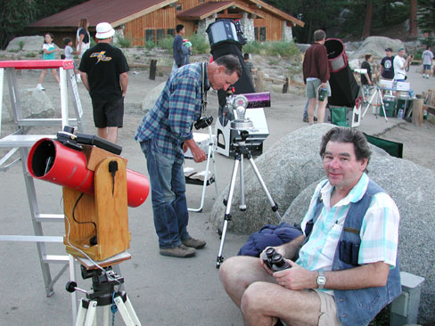

|  |
One evening as the sun went down and the campfire light was burning
Down the track came a star-girl hiking, and she said "Boys I'm not turning
"I'm headed for a land that's far away, below the starry fountains
"So come with me, we'll go and see the Big Eye Candy Mountains"
In the Big Eye Candy Mountains there's a land that's fair and bright
Where the Naglers grow on bushes and you star gaze every night
Where the seeing is fantastic, transparency supreme
On the swan and the bees and the planetary seas
And the Milky Way springs where Cygnus wings
In the Big Eye Candy Mountains
In the Big Eye Candy Mountains all the 'scopes have sturdy legs
And you can use high power when the seeing condition begs
The doubles split so easily, and planetary moons are disks
Oh I'm bound to go where there ain't no glow
Where the meteors fall, and the wind don't blow
In the Big Eye Candy Mountains
In the Big Eye Candy Mountains you never change your socks
And the little streams of Fosters Beer come a-trickling down the rocks
The horizon view is full of stars and the zenith darker yet
There's a universe for you and a galaxy or two
You can starhop all around 'em with a wide-field view
In the Big Eye Candy Mountains
In the Big Eye Candy Mountains the restrooms are nearby
And you can see the Milky Way above you in the sky
There ain't no used car dealerships, no streetlights, cars or malls
I'm a-goin' to stay where I sleep all day
Snuggling in my tent with my favorite gent :-)
In the Big Eye Candy Mountains
I'll see you soon this comin' new moon in the Big Eye Candy Mountains